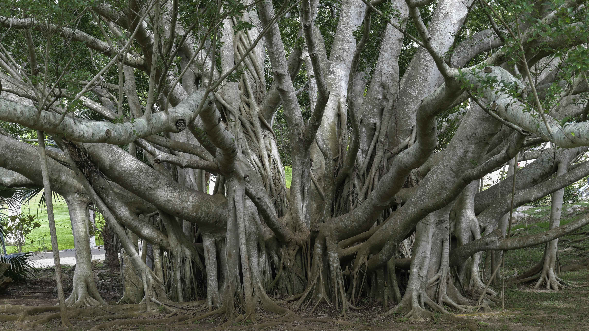

Why are trees so important?
Trees are vital. As the biggest plants on the planet, they give us oxygen, store carbon, stabilise the soil and
give life to the world’s wildlife. They also provide us with the materials for tools and shelter. Not only are trees essential for life, but as the longest living species on earth, they give us a link between
the past, present and future. It’s critical that woodlands, rainforests and trees in urban settings, such as parks, are preserved and
sustainably managed across the world.

A tree typically has many secondary branches supported clear of the ground by the trunk. This trunk typically
contains woody tissue for strength, and vascular tissue to carry materials from one part of the tree to another.
For most trees it is surrounded by a layer of bark which serves as a protective barrier. Below the ground, the
roots branch and spread out widely; they serve to anchor the tree and extract moisture and nutrients from the
soil. Above ground, the branches divide into smaller branches and shoots. The shoots typically bear leaves,
which capture light energy and convert it into sugars by photosynthesis, providing the food for the tree's
growth and development.